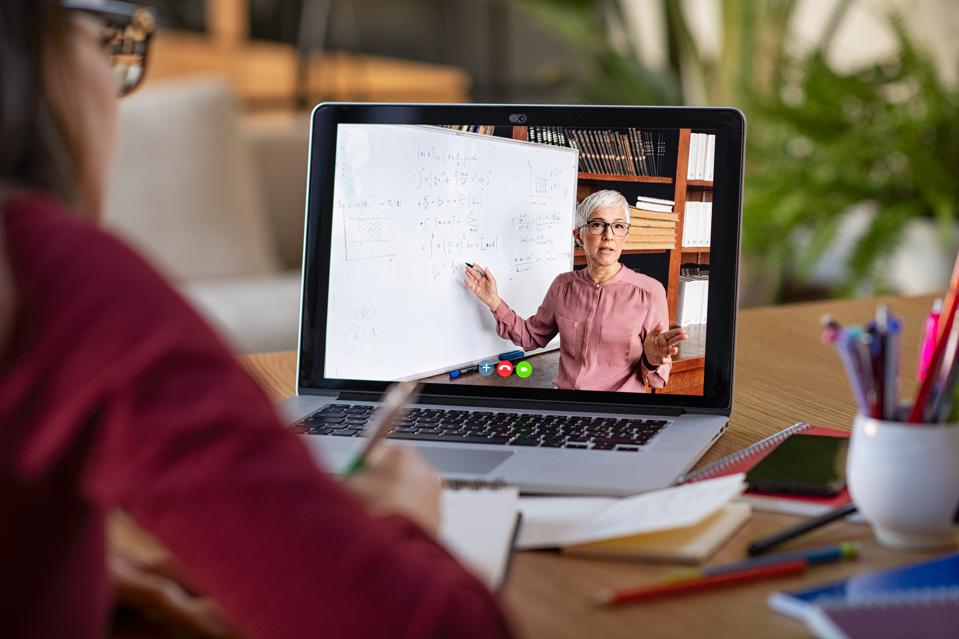
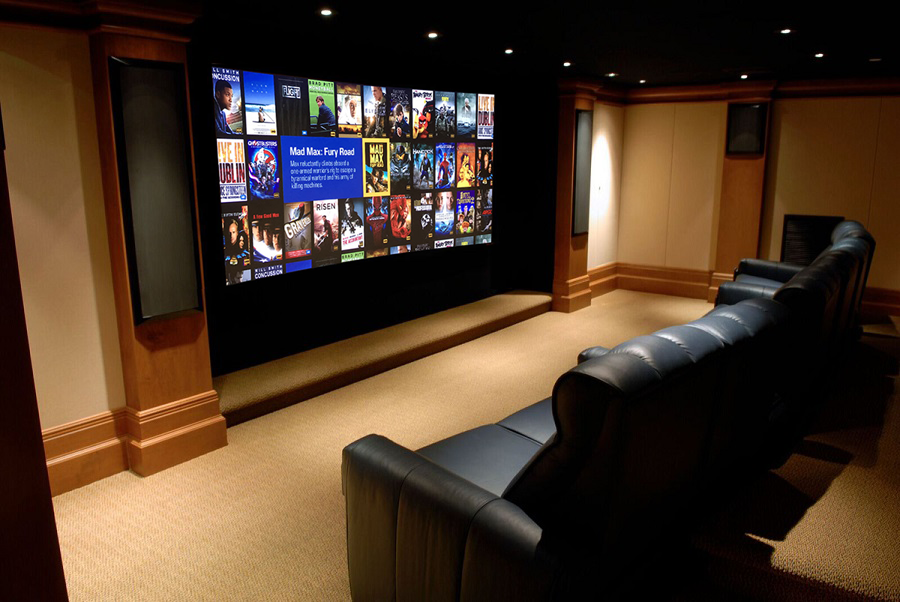

1 / 3

Avoid Distractions: Find a place in your house that is away from where your family frequents most often. Turn your phone off or place it into “Do Not Disturb” mode, to avoid pesky notifications getting you off track. Take breaks once or twice an hour to stand up and stretch. Try setting a timer when you take your breaks so that you don’t lose track of time. Implement your own strategies and use ones that work and discard strategies that don’t work.
2 / 3

Take some personal time to destress and decompress: Online school can be extremely stressful and at times mind-numbingly boring. After a major examination, or getting a lot of work done, take some time to play video games, watch tv, or do something enjoyable. Be careful not to abuse this privilege, but instead take the appropriate amount of time and get back to studying once you feel refreshed.
3 / 3
Stay Physically Fit: Not physically attending class can sometimes lead to laziness and living a lethargic lifestyle. But you are not a sloth, you are a human, and it is very important that you keep yourself physically fit to boost your immunity as well as keeping your energy level up. Even going for a walk for a half hour can be the first step to living a healthy lifestyle and keeping you safe from illness which can easily take you off track from achieving your academic goals.
❮
❯